|
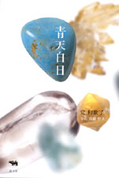
|
エッセイ | ||||||
| 青天白日 | |||||||
| 覚和歌子 | |||||||
| 四六判 200頁 | |||||||
| 定価1680円（本体1600円） | |||||||
| 4-7949-6604-0 | |||||||
| 祈りの効用、名前のシンクロニシティ、思いを言葉にすることで生まれる力、ご縁と呼ばれるめぐり合わせの妙……日々の生活で顔をのぞかせる、目に見えないもの、説明のつかないものたちとのつきあいを、不思議なユーモアをこめて綴るつれづれ語り。映画『千と千尋の神隠し』主題歌「いつも何度でも」の作詞を手がけた著者、待望の初エッセイ集。 | |||||||
|
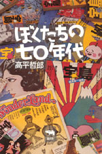
|
エッセイ | ||||||
| ぼくたちの七〇年代 | |||||||
| 高平哲郎 | |||||||
| 四六判 272頁 | |||||||
| 定価1785円（本体1700円） | |||||||
| 4-7949-6602-4 C0095 | |||||||
|
この本には、七〇年代の空気が真空パックされている。雑誌『ワンダーランド』から『宝島』へ。テレビ番組『笑ってる場合ですよ！』から『今夜は最高！』へ。植草甚一、赤塚不二夫、浅井愼平、林家三平、タモリたちとともに生きたおかしくも混沌とした日々をつづる。七〇年代に青春の渦中にあった人にも、遅れてきた人たちにも必読のエッセー。
|
|||||||
|
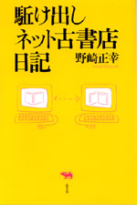
|
ノンフィクション・古本 | ||||||
| 駈け出しネット古書店日記 | |||||||
| 野崎正幸 | |||||||
| 四六判 216頁 | |||||||
| 定価1890円（本体1800円） | |||||||
| 4-7949-6606-7 C0095 | |||||||
| フリーライターの生活も20年を越えたが、雑誌・書籍の売り上げ低下に伴い、仕事も減ってきた。そこで、長年、親しんできた読書と本とのつきあいをいかそうと、インターネットの古本屋を開店することに。HPの作り方・古書店開業の仕方から、軌道に乗ってきた最近の日々までを日記形式で描いた、手に汗握る書き下ろしノンフィクション。 | |||||||
|
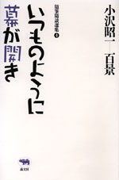
|
エッセイ | ||||||
| シリーズ名／小沢昭一百景4 いつものように幕が開き |
|||||||
| 小沢昭一 | |||||||
| 四六判 400頁 | |||||||
| 定価2520円（本体2400円） | |||||||
| 4-7949-1794-5 C0395 | |||||||
| 随筆随談集も四巻目。テーマは「ラジオ」「落語」「ストリップ・吉原」に「芸能座のこと」「しゃぼん玉座」です。小沢さんの滋味で滑稽で韜晦が絶好調です。志ん生・文楽を、江國滋さんと語った話は、天下一品！ ストリッパー・一条さゆりを和歌山刑務所に訪ねた話は、今では古典です。この巻のトリは、『唐来参和』のある日の公演の前口上となりました。 | |||||||
|
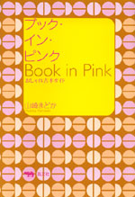
|
エッセイ | ||||||
| ブック・イン・ピンク おしゃれ古本ガイド |
|||||||
| 山崎まどか | |||||||
| 四六判 200頁 | |||||||
| 定価1680円（本体価格1600円） | |||||||
| 4-7949-6603-2 C0095 | |||||||
| マニア好みの稀覯本だけが古本じゃない。大好きな本はみんなに知らせて、喜びを分かち合いたい！ 「乙女カルチャー」ライターが、そんな気軽に入手できる、愛すべき永遠の定番を紹介。森茉莉、V・ウルフ、カポーティから、加藤和彦＆安井かずみ、フォアレディース・シリーズまで、「乙女」なセンスが光るライブラリー。 | |||||||
|
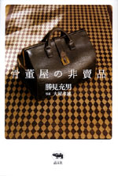
|
骨董・エッセイ | ||||||
| 骨董屋の非賣品 | |||||||
| 勝見充男 | |||||||
| 四六判 200頁 | |||||||
| 定価1995円（本体1900円） | |||||||
| 4-7949-6601-6 C0072 | |||||||
| 「自在屋」という骨董屋を営む勝見さんは四代目。家業が和骨董を商う店であるにもかかわらず、ホーローのポットやガラス瓶など、西洋骨董を集めてきた。いまでは茶道具、酒器、飯碗など和骨董を毎日の生活で使う。その大事な逸品を一挙に公開。ものとの出会い、品物の選び方や、尊敬する先輩の骨董屋さんのことなど、骨董屋さんならではの、骨董エッセイ。 | |||||||
|
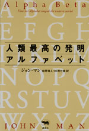
|
古代史・文字 | ||||||
| 人類最高の発明アルファベット | |||||||
| ジョン・マン 金原瑞人・杉田七重訳 | |||||||
| 四六判 336頁 | |||||||
| 定価2520円（本体2400円） | |||||||
| 4-7949-6605-9 C0080 | |||||||
| アルファベットは、たった二十数個の意味を持たない記号によって世界のあらゆる話し言葉を表す、人類最高の発明である。紀元前２０００年にエジプトで誕生して以来、アルファベットが西欧各地の文化を大きく変えながら、簡便ですぐれた文字コミュニケーションのかたちへと成長していった過程を豊富なエピソードであかす。興味つきないABC読本。 | |||||||
|
|
女性・絵本 | ||||||
| ヒーリング・キャット | |||||||
| 葉祥明 | |||||||
| A5変型 48頁 | |||||||
| 定価1575円（本体1500円） | |||||||
| 4-7949-6607-5 C0095 | |||||||
| 殺伐とした世相、思い通りにならない日常、傷心、絶望の日々…。でも、大丈夫！ そんな時、そっと寄り添い、勇気付けてくれる青い猫の存在を知っていれば…。やさしく美しい画風で女性に絶大な人気を誇る著者による大人向け癒しの本。愛猫家としてよく知られる著者が、初の猫本に取り組む注目の書。英訳付。 | |||||||
|
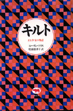
|
外国文学・ヤングアダルト | ||||||
| シリーズ名／必読系！ヤングアダルト キルト ある少女の物語 |
|||||||
| スーザン・テリス 堂浦恵津子 | |||||||
| 四六判 248頁 | |||||||
| 定価1890円（本体1800円） | |||||||
| 4-7949-1837-2 C0397 | |||||||
| 1899年、農場の娘ネルは18歳の高校生。大学にすすみ、ボストンで働くことが夢。でも、両親は結婚を決めてしまい、失意のネルは祖母の形見の布でキルトをつくる。やせ細る娘と、日に日に重くなるキルト……。全米図書館協会選出の「最優秀ヤングアダルト図書」。 | |||||||
|
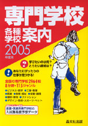
|
学校案内 | ||||||
| 専門学校各種学校案内 2005年度用 | |||||||
| 晶文社出版編集部編 | |||||||
| A５判 760頁 | |||||||
| 定価2100円（本体2000円） | |||||||
| 4-7949-9695-0 C7037 | |||||||
| 全国の専門学校2964校とユニークな教育を行っている各種の学校を８分野に分けて紹介。学べる内容や取得できる国家資格など115のジャンルを設定し、学校ごとに表示。「各分野のジャンル別目次」でも各学校に設置された学科の内容が一目でわかるようになっているので、学校さがしが一段と便利に。専門学校のことがよくわかる解説も充実。東京アカデミー提供の「'04年度看護・医療系専門学校の入試難易度データ」掲載。 | |||||||
|
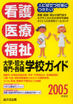
|
看護・医療 学校案内 | ||||||
| 看護・医療・福祉 大学・短大・専門・各種 学校ガイド 2005年度用 | |||||||
| 晶文社出版編集部編 | |||||||
| A５判 744頁 | |||||||
| 定価2100円（本体2000円） | |||||||
| 4-7949-9705-1 C7047 | |||||||
| 看護師、診療放射線技師、理学・作業療法士、介護・社会・精神保健福祉士など21の国家資格の養成校を網羅。スペシャリストをめざす人に最適な１冊。巻頭には、めざす職業から学校をさがすことができる「資格別目次」。学校案内には、入試競争率・国家試験の合格率も掲載。代ゼミ提供「大学入試難易ランキング」に加え、東京アカデミー提供の「'04年度看護・医療系専門学校の入試難易度データ」（折り込み）も掲載。 | |||||||
| 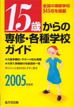 | 学校案内 | ||||||
| 15歳からの専修・各種学校ガイド 2005年度用 | |||||||
| 看護・医療・福祉 大学・短大・専門・各種 学校ガイド 2005年度用 | |||||||
| A５判 272頁 | |||||||
| 定価1995円（本体1900円） | |||||||
| 4-7949-9715-9 C6037 | |||||||
| 中学新卒者を中心に、15歳という入学資格を対象にしぼったユニークな学校ガイド。全国の専修学校高等課程を完全掲載し、さらに各種学校やその他入学できる学校の計545校を紹介。大検予備校・サポート校についても掲載。9ジャンル別の目次で、興味ややりたいことに合わせて、めざす学校を見つけることができる。大学入学資格付与指定校一覧も収録。 | |||||||